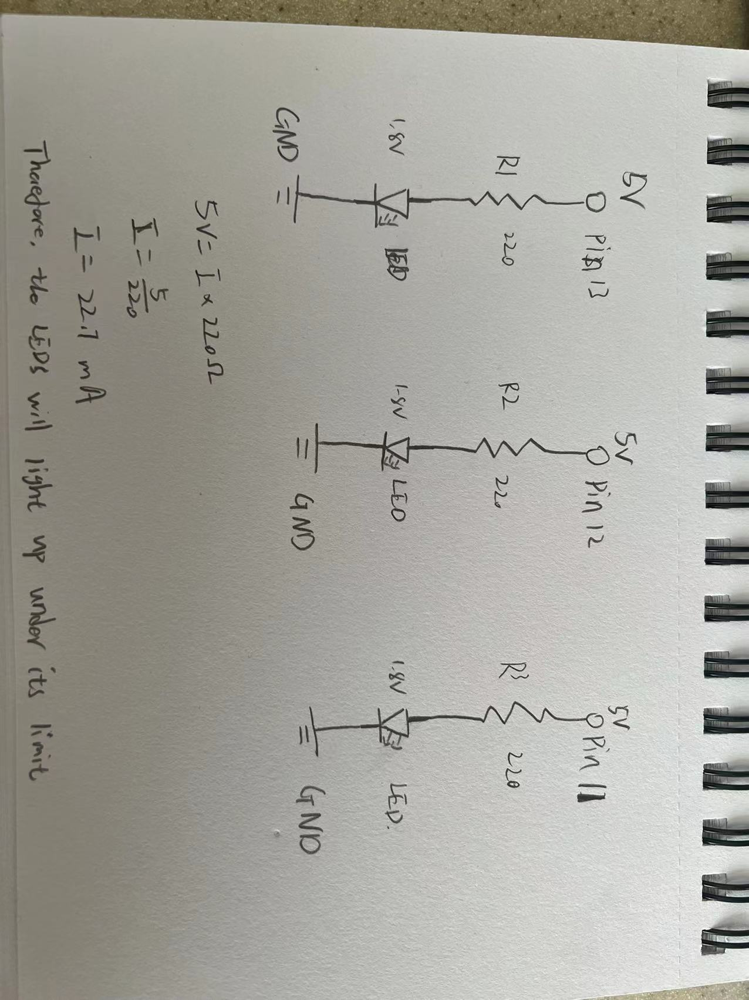

Assignment1: Blink

This is the the gif for the circuit's operation!
Circuit's Schematic

Photo of the Circuit
Firmware:
// the setup function runs once when you press reset or power the board
void setup() {
// initialize digital pin LED_BUILTIN as an output.
pinMode(13, OUTPUT);
pinMode(12, OUTPUT);
pinMode(11, OUTPUT);
}
// the loop function runs over and over again forever
void loop() {
digitalWrite(13, HIGH);// turn the LED 13 on (HIGH is the voltage level)
digitalWrite(12, HIGH);// turn the LED 12 on
delay(1000); // wait for a second
digitalWrite(13, LOW);// turn the LED 13 off by making the voltage LOW
digitalWrite(11, HIGH);// turn the LED 11 on
delay(1000); // wait for a second
digitalWrite(11, LOW);// turn the LED 11 off
digitalWrite(13, HIGH);// turn the LED 13 on
digitalWrite(12, LOW); // turn the LED 12 off
delay(1000); // wait for a second
digitalWrite(13, LOW);// turn the LED 13 off
delay(1000); // wait for a second
digitalWrite(13, HIGH);// turn the LED 13 on
delay(1000); // wait for a second
digitalWrite(13, LOW);// turn the LED 13 off
delay(1000); // wait for a second
digitalWrite(12, HIGH); // turn the LED 12 on
}